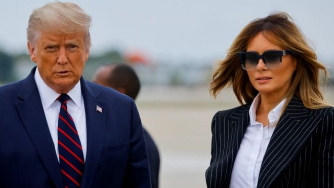
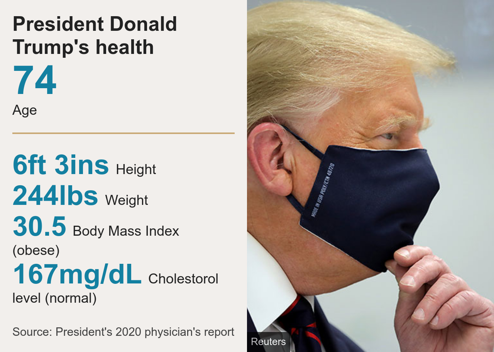

This occured after several cautions fell on deaf ears
US President Donald Trump has said he and First Lady Melania Trump have tested positive for coronavirus and are now self-isolating.
Mr Trump, aged 74 and therefore in a high-risk group, wrote on Twitter: "We will get through this together."
The president has "mild symptoms" of coronavirus, White House officials say.
Mr Trump's announcement comes just over a month before the presidential elections on 3 November, where he faces Democratic challenger Joe Biden.
The development comes after Hope Hicks, one of Mr Trump's closest aides, tested positive.
In a tweet, Mr Biden and his wife Jill wished the first couple a swift recovery continue to pray for the health and safety of the president and his family," he said.
It is not clear whether Mr Biden is also being tested, and whether he will continue his campaign on Friday with a scheduled visit to Michigan. He stood approximately 10ft (3m) away from Mr Trump during the debate.
Debate moderator Chris Wallace said on Friday he was getting tested.
A person is required to self-isolate after either showing coronavirus symptoms or a positive test. Meanwhile, quarantine restricts the movements of those who have been in contact with an infected person, but are not themselves positive or symptomatic.
Mr Trump has mostly spurned mask-wearing and has often been pictured not socially distanced with aides or others during official engagements.
The coronavirus has infected more than 7.2 million Americans, killing more than 200,000 of them.
Mr Trump's physician, Dr Sean Conley, released a statement late on Thursday, saying the president and the first lady were "both well at this time, and they plan to remain at home within the White House during their convalescence".
"Rest assured I expect the president to continue carrying out his duties without disruption while recovering, and I will keep you updated on any future developments," the statement said.
The physician provided no further details.
However, White House officials and US Treasury Secretary Steven Mnuchin later said Mr Trump was experiencing mild Covid-19 symptoms.
According to Mr Trump's most recent physical examination earlier this year, he weighed 244lbs (110.7kg). This is considered to be obese for his height of 6ft 3ins.
But Dr Conley stated at the time that the president "remains healthy". Mr Trump will also have the best medical care available.
America's Centers for Disease Control and Prevention (CDC) says a person must self-isolate for 10 days after a positive test.